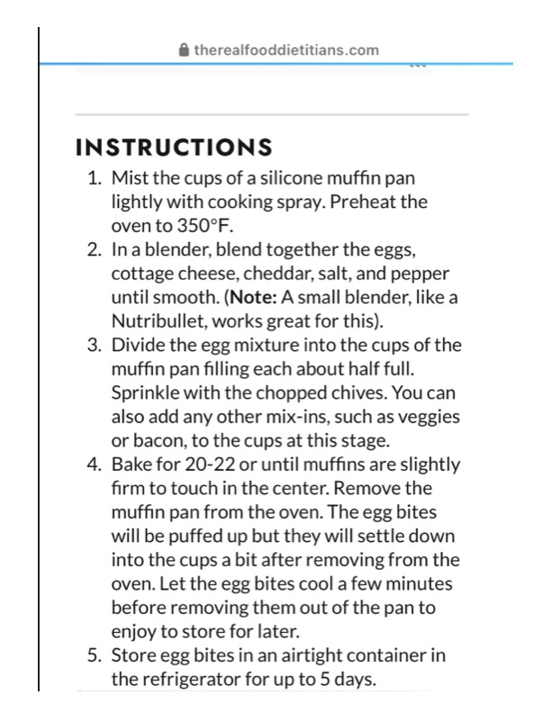

@ therealfooddietitians.com

Original cookbook page 574
Ingredients
- Eggs
- Cottage cheese
- Cheddar cheese
- Salt
- Pepper
- Chopped chives
- Optional: veggies
- Optional: bacon
Instructions
- Mist the cups of a silicone muffin pan lightly with cooking spray.
- Preheat the oven to 350°F.
- (Note: A small blender, like a Nutribullet, works great for this).
- Divide the egg mixture into the cups of the
- Sprinkle with the chopped chives.
- You can also add any other mix-ins, such as veggies or bacon, to the cups at this stage.
- Bake for 20-22 or until muffins are slightly
- Remove the muffin pan from the oven.
- Let the egg bites cool a few minutes before removing them out of the pan to enjoy to store for later.
Recipe #574 from collection